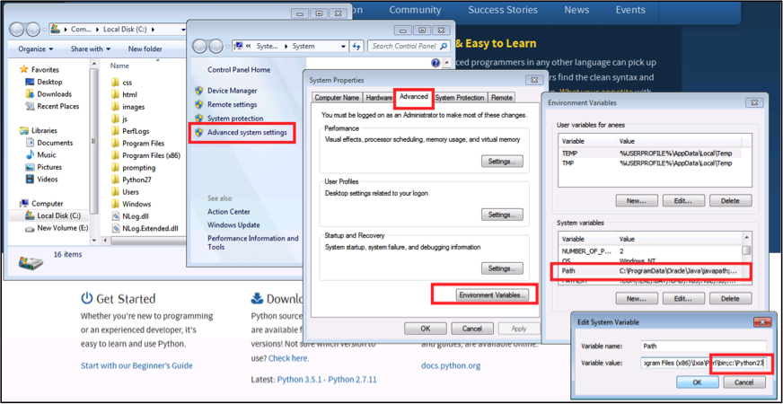
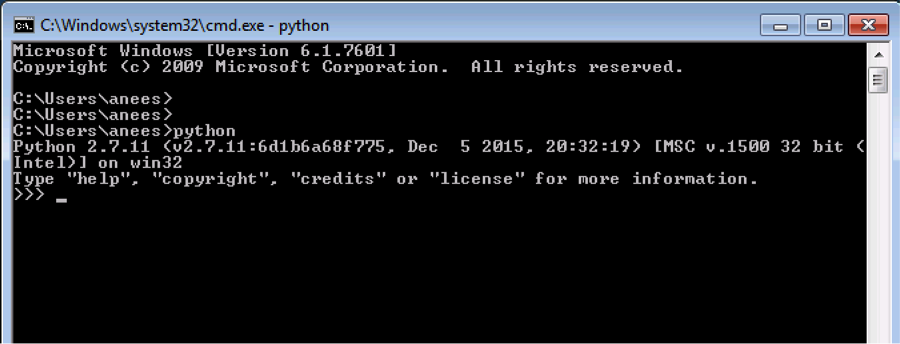
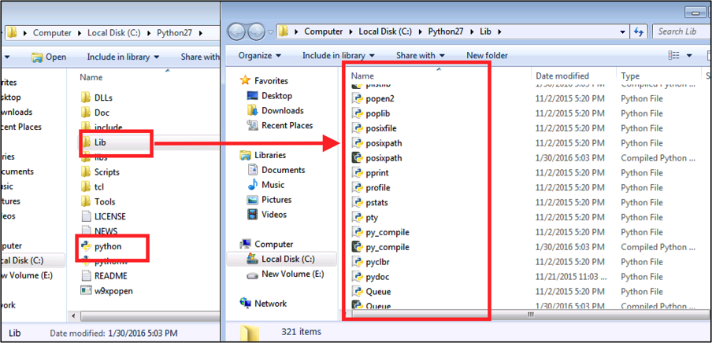

Chapter 1: Introducing Python Core Concepts¶
Network engineers require to connect to network devices, collect data using network OS commands and parse through the data to discover the required information. With that in mind, Python’s core concepts such as data types, operations, data structures, control flow statements and modules are discussed in this chapter. Before discussing the core concepts, Python implementation on various operating systems need to be discussed.
Python Implementation on Various Operating Systems¶
Python implementation on Microsoft Windows, Apple Mac’s OS X, Ubuntu Linux distribution and Arista Extensible Operation System (EOS) is discussed in this section. There are two tracks of Python versions available today 2.x and 3.x. Python version 2.x is widely deployed and the industry will eventually move to 3.x. Python programs in this book are written using the version 2.7.x.
Microsoft Windows¶
Python is not installed by default on Microsoft Windows operating systems. You can download and install python from www.python.org website. For this book, It is recommended to download and install Python version 2.7.x. By default, Python will be installed in the c:Python27 folder. After installing Python, PATH variable needs to be updated with the path to the Python installation folder.
After changing the PATH variable, launch the Windows command prompt and verify you can invoke the Python interpreter.
Python interpreter is located in the folder C:Python27. Python standard library modules are located in C:Python27folder.
Apple Mac OS X¶
Apple Mac OS X comes with Python 2.7.x. You can verify by invoking the interpretor from the terminal. If your OS X version does not have Python installed by default, you can download and install python from www.python.org website.
anees:~ anees$ python
Python 2.7.10 (default, Aug 22 2015, 20:33:39)
[GCC 4.2.1 Compatible Apple LLVM 7.0.0 (clang-700.0.59.1)] on darwin
Type "help", "copyright", "credits" or "license" for more information.
Python interpreter is located in /usr/bin folder and Python standard library files are located in /usr/lib/python2.7 folder.
::
anees:~ anees$ which python
/usr/bin/python
anees:~ anees$ ls -l /usr/lib/python2.7
lrwxr-xr-x 1 root wheel 75 Sep 17 05:27 /usr/lib/python2.7 -> ../../System/Library/Frameworks/Python.framework/Versions/2.7/lib/python2.7
anees:~ anees$ ls -l /usr/lib/python2.7/
****** Skipped ******
-rw-r--r-- 1 root wheel 8252 Aug 22 20:37 posixfile.pyo
-rw-r--r-- 1 root wheel 13925 Aug 22 20:36 posixpath.py
-rw-r--r-- 1 root wheel 12570 Aug 22 20:37 posixpath.pyc
-rw-r--r-- 1 root wheel 12570 Aug 22 20:37 posixpath.pyo
-rw-r--r-- 1 root wheel 11777 Aug 22 20:36 pprint.py
-rw-r--r-- 1 root wheel 11144 Aug 22 20:37 pprint.pyc
-rw-r--r-- 1 root wheel 10967 Aug 22 20:37 pprint.pyo
-rwxr-xr-x 1 root wheel 22782 Aug 22 20:36 profile.py
-rw-r--r-- 1 root wheel 18408 Aug 22 20:37 profile.pyc
-rw-r--r-- 1 root wheel 18161 Aug 22 20:37 profile.pyo
-rw-r--r-- 1 root wheel 26711 Aug 22 20:36 pstats.py
-rw-r--r-- 1 root wheel 28013 Aug 22 20:37 pstats.pyc
-rw-r--r-- 1 root wheel 28013 Aug 22 20:37 pstats.pyo
****** Skipped ******
Ubuntu¶
Linux distributions come with default Python 2.7.x. Some of the newer distributions come with Python 3.x. Most of the linux software modules are built on top of this default Python version. So upgrading the default Python version on Linux will break those modules. It is recommended to install the desired version using Python virtua environment. For the use cases in this book, the default Python version should be sufficient.
anees@ubuntu-web2py:~$ which python
/usr/bin/python
anees@ubuntu-web2py:~$
anees@ubuntu-web2py:~$ python --version
Python 2.7.6
anees@ubuntu-web2py:~$ ls -l /usr/lib/python2.7
total 8228
-rw-r--r-- 1 root root 17876 Jun 22 2015 _abcoll.py
-rw-r--r-- 1 root root 24794 Dec 29 12:08 _abcoll.pyc
-rw-r--r-- 1 root root 7145 Jun 22 2015 abc.py
-rw-r--r-- 1 root root 6121 Dec 29 12:08 abc.pyc
-rw-r--r-- 1 root root 34231 Jun 22 2015 aifc.py
-rw-r--r-- 1 root root 30307 Dec 29 12:08 aifc.pyc
-rw-r--r-- 1 root root 60 Jun 22 2015 antigravity.py
-rw-r--r-- 1 root root 201 Dec 29 12:08 antigravity.pyc
-rw-r--r-- 1 root root 2663 Jun 22 2015 anydbm.py
-rw-r--r-- 1 root root 2794 Dec 29 12:08 anydbm.pyc
-rw-r--r-- 1 root root 217 Jun 22 2015 argparse.egg-info
-rw-r--r-- 1 root root 88691 Jun 22 2015 argparse.py
-rw-r--r-- 1 root root 63859 Dec 29 12:08 argparse.pyc
-rw-r--r-- 1 root root 11805 Jun 22 2015 ast.py
-rw-r--r-- 1 root root 12906 Dec 29 12:08 ast.pyc
****** Skipped ******
Python Package Manager (pip)¶
When Python is installed from the source, it has come with library of standard modules. When a Python interpreter is invoked, very limited number of modules were imported by default into your program’s main namespace. Other standard modules in the library can be imported into your program when you need them. There are many vendors, developer community create Python modules and deliver them through pip. pip is a Python package installer which is used to install Python packages from a repository called PyPI (Python Package Index). If you download Python versions 2.7.9 (or 3.4) and above from www.python.org, pip installer is installed by default.
If pip is not installed on your Windows or Mac OS X, you can download the Python program get-pip.py and install it on your system.
python get-pip.py
You can verify pip installation on your Windows as described below.
C:\Users\anees>python -m pip show
ERROR: Please provide a package name or names.
You are using pip version 7.1.2, however version 8.0.2 is available.
You should consider upgrading via the 'python -m pip install --upgrade pip' command.
C:\Users\anees>python -m pip install --upgrade pip
Collecting pip
Downloading pip-8.0.2-py2.py3-none-any.whl (1.2MB)
100% |################################| 1.2MB 435kB/s
Installing collected packages: pip
Found existing installation: pip 7.1.2
Uninstalling pip-7.1.2:
Successfully uninstalled pip-7.1.2
Successfully installed pip-8.0.2
You can verify pip installation on your Mac OS X as described below.
anees:~ anees$ pip show
ERROR: Please provide a package name or names.
You are using pip version 7.1.2, however version 8.0.2 is available.
You should consider upgrading via the 'pip install --upgrade pip' command.
anees:~ anees$ sudo pip install --upgrade pip
Password:
The directory '/Users/anees/Library/Caches/pip/http' or its parent directory is not owned by the current user and the cache has been disabled. Please check the permissions and owner of that directory. If executing pip with sudo, you may want sudo's -H flag.
The directory '/Users/anees/Library/Caches/pip' or its parent directory is not owned by the current user and caching wheels has been disabled. check the permissions and owner of that directory. If executing pip with sudo, you may want sudo's -H flag.
Collecting pip
Downloading pip-8.0.2-py2.py3-none-any.whl (1.2MB)
100% |████████████████████████████████| 1.2MB 477kB/s
Installing collected packages: pip
Found existing installation: pip 7.1.2
Uninstalling pip-7.1.2:
Successfully uninstalled pip-7.1.2
Successfully installed pip-8.0.2
anees:~ anees$
Since the default Python version on Ubuntu Linux distribution may be prior to 2.7.9, you need to install pip from Linux package manager.
anees@ubuntu-web2py:~$ python --version
Python 2.7.6
anees@ubuntu-web2py:~$ sudo apt-get install python-pip
anees@ubuntu-web2py:~$ pip -V
pip 1.5.4 from /usr/lib/python2.7/dist-packages (python 2.7)
Later in this book, there are few Python packages installed using pip as and when needed by the use cases. Some of the packages may not be delivered through pip and you can download through your system packet manager or manually download it to the library. For more information to learn about pip, visit https://pip.pypa.io/en/stable/.